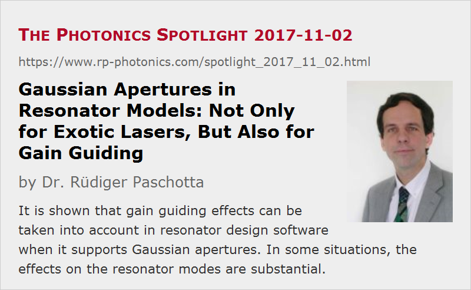

Gaussian Apertures in Resonator Models: Not Only for Exotic Lasers, But Also for Gain Guiding
Posted on 2017-11-02 as a part of the Photonics Spotlight (available as e-mail newsletter!)
Permanent link: https://www.rp-photonics.com/spotlight_2017_11_02.html
Author: Dr. Rüdiger Paschotta, RP Photonics Consulting GmbH
Abstract: It is shown that gain guiding effects can be taken into account in resonator design software when it supports Gaussian apertures. In some situations, the effects on the resonator modes are substantial.

Some programs for the resonator design of lasers – for example, our product RP Resonator – allow one to include so-called Gaussian apertures. What that means is an element where the power transmission exhibits a Gaussian radial dependence, i.e., high transmission on the beam axis and reduced transmission for increasing distances from that axis.
Obviously, one requires that feature for modeling some lasers where the output coupler has such a radial dependence; one can indeed buy such Gaussian mirrors, more generally graded reflectivity mirrors. Their probably most important application is to realize lasers with unstable resonators, which can give improved beam quality despite the quite large mode sizes.
However, even for quite ordinary lasers it can be useful to have the software which allows for Gaussian apertures. Specifically, in end-pumped lasers one often has a laser gain which is highest on the pump beam axis and gets a small for positions away from that axis. That radial variation of the gain actually has some effect on the resonator modes. That can now be simulated by including a Gaussian aperture in the resonator model - placed e.g. in the middle of the laser crystal. That aperture does not include the laser gain as such, which is not relevant for the mode calculation, but only its radial decay. If you like, we effectively combine a spatially constant gain (omitted for the model) with an element having a power loss increasing in the radial direction.
How to Calculate Such Effects?
Most programs for calculating the modes of laser resonators without optical aberrations are based on an ABCD matrix algorithm. Here, it is possible to introduce a Gaussian aperture when considering only the second-order radial dependence. The resulting ABCD matrix for such an aperture looks similar to that for a lens, but one important difference is that one of the matrix elements becomes imaginary. As a result, the round-trip ABCD matrix now becomes complex, whereas without such elements it would be purely real.
An Example Case
In the following, I show you an example case, in which you can see a number of interesting physics details. The model has been set up with our software RP Resonator, which has been supporting complex ABCD matrices for a long time. We consider an end-pumped Nd:YAG laser, where a 5 mm long laser crystal is placed between a flat output coupler and a convex highly reflecting mirror with 500 mm radius of curvature:
Disregarding the radial dependence of the laser gain, one would calculate the beam radius of 261 μm in the laser crystal. But now we assume that the laser crystal is end-pumped, where the pump beam has a beam radius of 300 μm and the single-pass gain is ≈0.5 dB, consistent with an output coupler transmission of 20%. (The magnitude of gain is now relevant, because the more gain we have, the stronger is its transverse decay for a given beam radius.) For now, we assume that the local gain is proportional to the pump intensity.
With those assumptions, we can now plot the calculated beam radius versus position:
The calculation would of course be somewhat more realistic if we had a distributed Gaussian aperture in our model, but that would not lead to essentially different results.
You can see that the evolution of beam radius is now different for the forward and backward propagation direction, although normally (i.e., without a Gaussian aperture) there would be no difference. That effect can actually be understood quite easily. Consider the light corresponding to the fundamental resonator mode, coming from the left side (the output coupler). When that light is transmitted through the Gaussian aperture, its beam radius is reduced, because the radial decay of intensity is enhanced by the aperture. (In reality, we have a stronger amplification on the beam axis, compared with positions away from that axis.) After reflection of the beam at the curved highly reflecting mirror, the beam radius stays relatively large, until it is again reduced at the aperture. Only that way it is possible that the beam reproduces itself after one round-trip – which by definition is required for a resonator mode.
A natural consequence of that effect is that the wavefronts on the end mirrors do no longer coincide with the mirror surfaces; otherwise, we would have the well-known ordinary behavior where the beam radius does not depend on the propagation direction. That also implies that we can no longer assume to have a beam focus on the output coupler mirror; the output beam is somewhat more divergent than it would be without the beam aperturing (gain guiding) in the laser crystal – even if the beam quality is perfect.
By the way, with that gain guiding we can have a functioning laser resonator even if both resonator mirrors are flat. If we use a flat highly reflecting mirror in our example case, the beam radii just become somewhat larger:
You can call such a resonator an unstable resonator, which however is somewhat misleading because that concept in fact allows one to produce rather practical resonators with good stability despite large mode radius, as required e.g. for Q-switched lasers with high pulse energy and high beam quality.
Consider Gain Saturation
There was still one dubious assumption in our numerical model, namely that the local gain is proportional to the pump intensity. That is actually not true, because it also depends on the laser intensity, which causes substantial gain saturation if we operate the laser well above threshold (as usual).
Therefore, I did a simple sanity check: I calculated the Nd excitation from the pump and laser intensity for given beam parameters: pump beam with 5 W (i.e., roughly 5 times above threshold) and 300 μm beam radius, laser beam with 2.5 W / 0.20 (output coupling) · 2 (forward and backward beam) = 25 W and 261 μm beam radius (as calculated without gain guiding).
From the diagram we see that our assumption concerning the gain profile was utterly wrong, at least for those parameters! In reality, gain saturation more than flattens the gain profile around the beam axis, and the resulting gain profile, having substantial higher-order components, cannot be treated with the ABCD matrix algorithm. Anyway, we can expect the overall effect on the beam radii to be weaker than obtained above. On the other hand, if we only reduce the pump beam radius from 300 μm to 250 μm (not shown here), the mentioned assumption is much more valid, and the obtained excitation profile would at least give you a gain guiding effect which is half as strong as naively estimated. So you see that such effects can quite sensitively depend on the pump beam size, and of course on how far above threshold the laser is operated.
In Which Situations Are Gain Guiding Effects Strong?
If you have in the past always disregarded the gain guiding in end-pumped lasers, you may now feel somewhat uneasy. The question is now in which situations we should not disregard gain guiding effects. The following factors should be considered:
- First we need to estimate the gain profile, since the radial flattening effect by gain saturation can be stronger or weaker, depending on factors like the intracavity power and the involved beam radii. To be sure, one should at least do a relatively simple sanity check as I have shown above.
- Obviously, the guiding effect is stronger when using a smaller pump beam radius. It can already be quite significant when the pump beam radius of a Gaussian-shaped pump beam equals the laser mode radius (as calculated without the aperture). It becomes weaker e.g. for a super-Gaussian pump beam (for which a model based on ABCD matrices cannot be used).
- The higher the laser gain is, the stronger the effect. Typically, we have relatively low gains in continuous-wave solid-state lasers – e.g. a single-pass gain of the order of 0.5 dB to 1 dB –, whereas for Q-switched lasers one often uses a substantially higher gain in order to obtain a high pulse energy, a short pulse duration and a high peak power. However, that gain will then be strongly saturated during pulse emission. Therefore, the guiding effects will be substantially time-dependent. For analyzing such a situation, it is no more sufficient just to consider resonator modes. One can, for example, use numerical beam propagation, as I have done in an example case for our software RP Fiber Power.
Some Conclusions
May be the most important conclusion of the shown analysis is that there is a lot to discover when you numerically simulate certain issues in laser physics. By making some common and quite innocent looking assumptions, you may be seriously misled and subsequently surprised in experiments which don't work as you expected. With numerical models, one can nicely check such things and then be sure in which parameter regimes a laser works, which effects are relevant for the performance, etc. In the end, you might well save time and money, even though it also take some time and money to get suitable numerical simulations done.
It is also clear that one should have substantial experience in laser physics and not just a piece of software. Well, if the software comes with competent technical support, you can actually learn a lot from that.
This article is a posting of the Photonics Spotlight, authored by Dr. Rüdiger Paschotta. You may link to this page and cite it, because its location is permanent. See also the RP Photonics Encyclopedia.
Note that you can also receive the articles in the form of a newsletter or with an RSS feed.
Questions and Comments from Users
Here you can submit questions and comments. As far as they get accepted by the author, they will appear above this paragraph together with the author’s answer. The author will decide on acceptance based on certain criteria. Essentially, the issue must be of sufficiently broad interest.
Please do not enter personal data here; we would otherwise delete it soon. (See also our privacy declaration.) If you wish to receive personal feedback or consultancy from the author, please contact him e.g. via e-mail.
By submitting the information, you give your consent to the potential publication of your inputs on our website according to our rules. (If you later retract your consent, we will delete those inputs.) As your inputs are first reviewed by the author, they may be published with some delay.
|  |
If you like this page, please share the link with your friends and colleagues, e.g. via social media:
These sharing buttons are implemented in a privacy-friendly way!